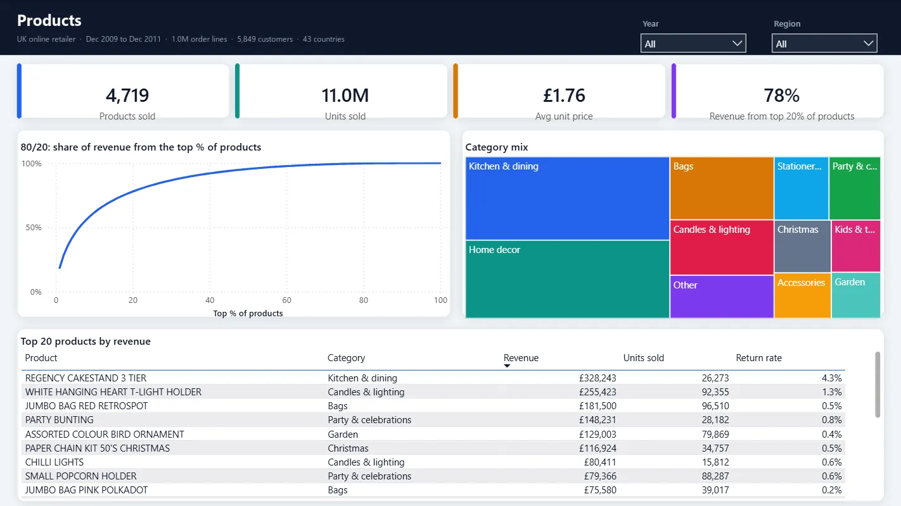
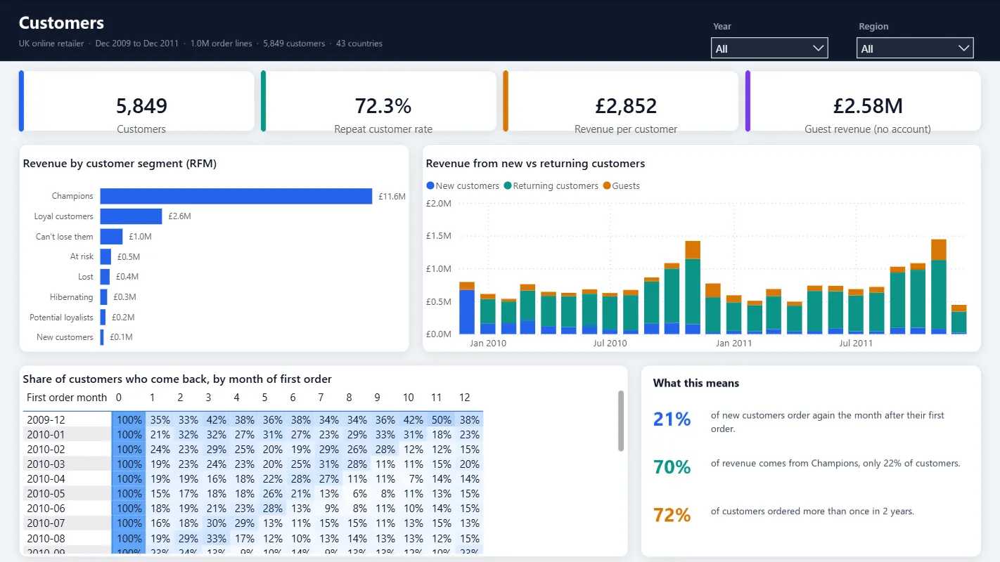
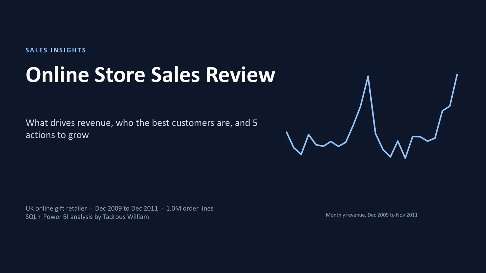

← All work
SQL · Power BI · Insights
SQL · Power BI · Insights
Online store sales: from 1 million messy rows to a Power BI dashboard and 5 recommendations
1,067,371 raw order lines cleaned and modelled in SQL, a 4-page Power BI dashboard, and a 12-slide insights deck with 5 clear recommendations.
1.07M
raw order lines cleaned
£19.3M
revenue analysed over 2 years
9
automated data checks

The problem
The raw export of a UK online gift retailer had duplicates, cancellations, fee lines and same-day corrections. A dashboard built on that data would mislead.
The goal: data you can trust, a dashboard the team can use, and clear answers to where the money comes from.
What I built
- 8-step SQL pipeline (DuckDB): removes duplicates, cancellations, fee lines and same-day corrections and fixes country names.
- 9 automated checks: revenue reconciles, keys are unique, no orphan rows.
- Star schema: sales and returns facts with product (4,719), customer (5,849, with RFM segment and cohort), country (43) and date tables.
- 4-page Power BI report with shared Year and Region filters: sales overview, products (80/20), customers (RFM and cohort retention), returns and order timing.
- 12-slide insights deck with 5 recommendations.
The result
What the data showed:
| Finding | Number |
|---|---|
| Revenue over 2 years | £19.3M from 39,326 orders |
| September to November | 36% of the year's revenue |
| Top 20% of products | 78% of revenue |
| "Champions" (22% of customers) | 70% of revenue |
| Exact duplicate lines removed | 34,335 |
Screens



Next case studyChat with your PDFs
→